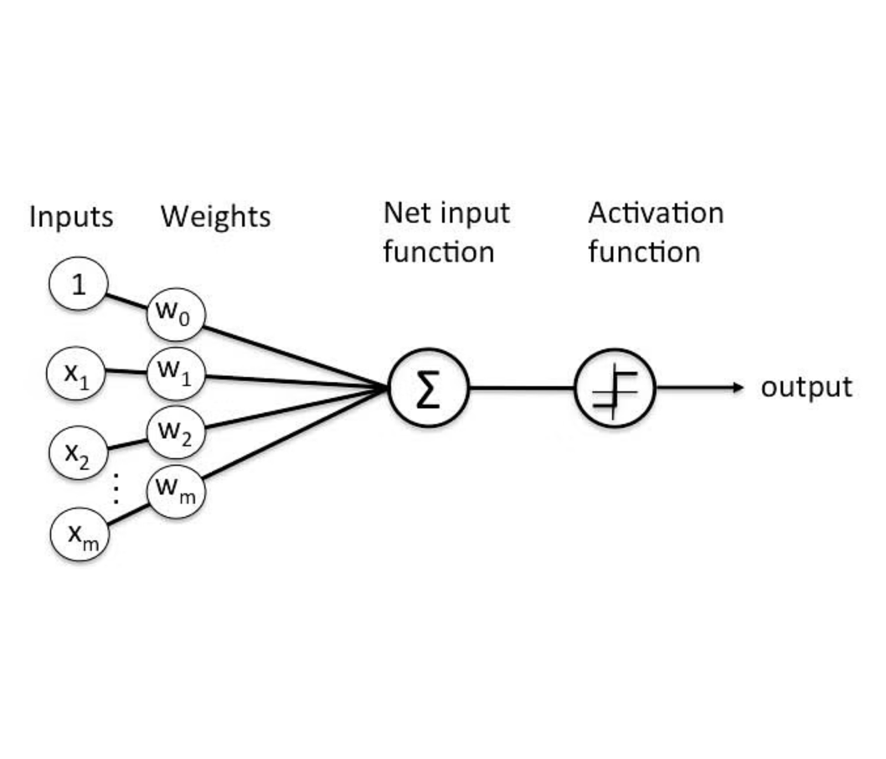

|
Po-Wen Hsu Hi friends! Welcome to Powen’s portfolio. 😊 I'm a seasoned data analyst with 5 years of expertise, adept at leveraging data to drive product strategies, streamline project management, cut production costs, and boost marketing effectiveness. Specializing in semiconductor IC design houses, electronics manufacturing, and e-commerce.
I'm delighted to be contacted at
email /
LinkedIn /
Github /
Medium. |
{kind=link}
Something About Me
🍰 Passionate about food and travel Professional Experience
- Data Analyst Consultant, Digital Marketing @ Johnson & Johnson - Kenvue
(Top 1 consumer health company) ProjectsI'm a data science lover, actively honing my analytical skills to enhance decision-making in business strategies. |
|

|
Perceptron Learning Algorithm: Unveiling the Foundations of Neural Network Training
Dec, 2023 The Perceptron Learning Algorithm (PLA) is a fundamental concept in neural network training, providing the groundwork for understanding how single-layer perceptrons learn from input data. |
|
|
K-means Clustering: A Step-by-Step Guide to Build the Algorithm from Scratch
Dec, 2023 Navigated through the intricacies of K-means clustering, unraveling the algorithm from scratch with Python. From a foundational understanding of the algorithm's inner workings to practical implementation. |
|
|
Kaggle Competition: House Price Prediction
Dec, 2023 Executed end-to-end data mining for house price prediction. Employed PCA for dimension reduction, Lasso for feature selection, and fine-tuned XGBoost hyperparameters. A comprehensive approach for accurate and efficient modeling. |
|
|
Professor Performance Review: A Simple Linear Regression Analysis
Dec, 2023 Conducted a simple linear regression analysis on Columbia Business School professors using the statistical tool Minitab. The results yielded compelling insights, empowering the administration to enhance teaching quality. |
|
|
Tailoring Resumes with Precision: A Web Scraping Approach Using Python
Oct, 2023 Automated LinkedIn Job Insight. Seamlessly logging in, extracting the latest job listings based on preferences. Employing web scraping to extract detailed job descriptions and responsibilities, followed by a natural language analysis to identify key job position keywords. |
|
|
Discover Café Tailored to User Preferences: Design and Implement an ETL Pipeline
April, 2023 Crafted a personalized café search engine in Python, leveraging the Google Places API and PostgreSQL. Integrated Spark for advanced attribute querying and incorporated Flask for a dynamic user interface, allowing users to find their ideal spot based on preferences, with real-time customization. Demo |
|
|
Elon’s Tweet and Tesla Stock Price: A Sentiment Analysis and Time Series Forecasting in R
April, 2023 Exploring market dynamics through sentiment analysis reveals the surprising influence of Elon Musk's tweets on Tesla stock prices. Regardless of content tone, evidence shows Elon's tweets significantly impact Tesla's stock, uncovering intriguing insights into market behavior. Report | Code |
|
|
Optimizing Price and Occupancy Rates: A Tableau Visualization Approach
Dec, 2022 Enhance the Price and Occupancy Rate of Holiday Inn through a comprehensive quantitative analysis. Employ Tableau as a visualization tool to deliver a compelling presentation, showcasing data-driven insights and strategies for optimization. |
|
|
Expanding the Online Community on Hinge App: A Statistical Research Design with R
Dec, 2022 Developed a research design plan and earned top honors in the final project presentation . Executed 1,000 simulated A/B testing studies, leveraging the R programming language to simulate a real-world scenario. This demonstrated a robust statistical approach and contributed to the project's success. |
|
|
Amazon Hackathon Competition: Advertising Strategy and Business Model Optimization
Oct, 2022 Unleashing the Power of Data to Optimize Advertising Strategy. Delve into innovative solutions, strategic insights, and data-driven approaches to propel advertising effectiveness and drive results. Secured Top 10 and Honorable Mention in the Amazon Hackathon Competition. |